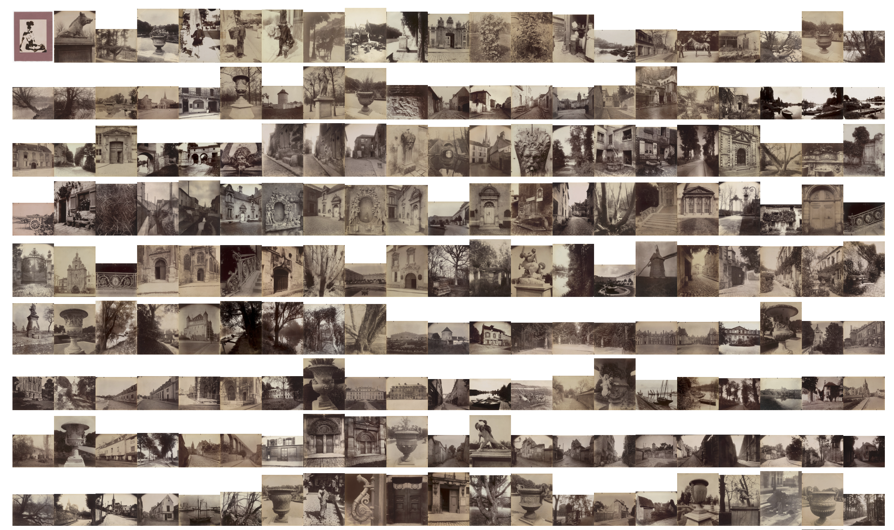
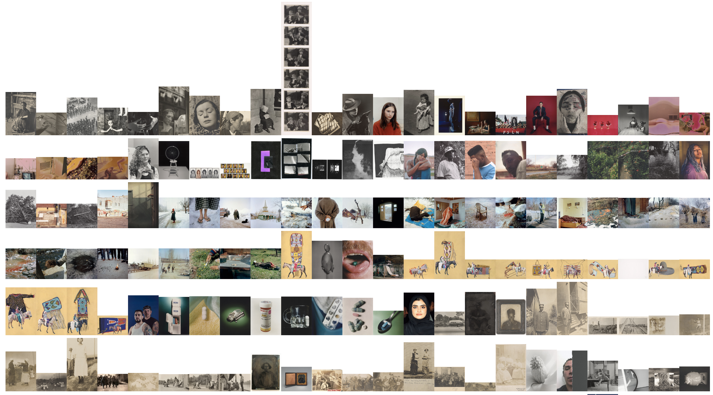
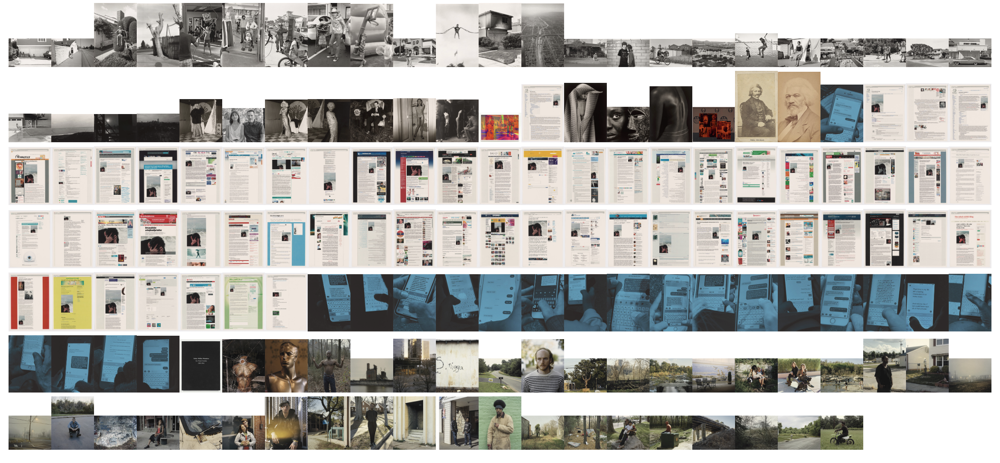

<!DOCTYPE html>
<html lang="en">

</html>


<style>
  /* Add a custom class for the images from 01_gallery_Wall.js */
  .gallery-wall-image {
    max-width: 200px; /* Set your desired maximum width */
    height: auto;
  }
</style>


  <head>
    <meta charset="utf-8">
    <title>MoMA dataset project</title>
    <link rel="stylesheet" href="https://fonts.googleapis.com/css?family=Source+Sans+Pro">
    <link rel="stylesheet" href="./style.css">

    <!-- Wordcloud 
    <meta charset="UTF-8">
    <meta name="viewport" content="width=device-width, initial-scale=1.0">
    <script src="https://d3js.org/d3.v7.min.js"></script> -->

    <script src="https://d3js.org/d3.v7.min.js"></script>

  </head>

  <body>
    
    <!-- GIF of gallery wall -->
    <!--  
     
       -->
    
    
    <!-- Part 1 - Photogrpahy vs. other Medium  -->
      <h1> MoMA Photography Collection</h1>
      <h6> By RC</h6>
 
      
      <br>
  

      <!-- Purchase overtime  -->
      <h2> Acqusition history: Photography vs. non-photography  </h2>
      
      <p> Photography, as a form of fine art, emerges relatively recently compared to traditional mediums like paintings and sculptures. 
        There's an enduring struggle for artistic recognition by photographers throughout the centuries. 
        Only in the mid-19th century did photography begin to be acknowledged as an aesthetic medium, by some.  
        Let's explore what MoMA's photography acquisitions can reveal about the journey of photography as a visual art medium.  
        
      </p>
   
      <p> On average, photography represents less than 30% of all of MoMA's acquisition.
      </p>
      <!-- D3.js graph - photo acquired over years -->
      <div id="container3"></div>


    <h2> Photography Acqusition Volume Trends </h2>  
    <p> How does ~30% of all acquisition translate into volume of purchase? It appears there's been a very slow growth with a handful of outlier years. For photography, the acquisition volume hovers around 200-400 per year.
      After the 90's, it jumps between 500 and 1,300 per year. There's one particular outlier year, 1968. That year MoMA purchased close to 5,000 items from French photographer Eugene Atgét's archive. Below, you can see an image from Atgét, "Eclipse", taken in 1911.
    </p>

      <!--  D3.js graph - % acquisition is photography -->
      <div id="container0"></div>

    <h2> Number of artist that are part of MoMA's collection</h2>  
      <p>  When looking at # of unique artist with work acquired each year, as opposed to number of art work, 
        we see that around 200-600 unique non-photography artists have work acquired by MoMA in recent year. 
        For photography, around 50-100 unique artists had MoMA acquired their work since 2010.
      </p>

       <!--  D3.js graph - unique artist acquired every years -->
       <!-- <div id="container1"></div> -->
       <div id="container4"></div>
      


      <h2> Of the 134,166 artwork in the MoMA collection (as of 2020), 
        33,446 are classified as Photography. Let's take a look of these 33K photographic work.
      </h2>


      <!-- Size  -->
      <h2> Size and orientation of collection </h2>

      
      

      
      

      <br>
      <h2> Gallery Wall (continued) </h2>
      <!--   -->

       
        
        

    <br>
    <br>
    <h6> Data Source: https://github.com/MuseumofModernArt/collection</h6>
    <h6> About this data: MoMA is committed to helping everyone understand, enjoy, and use our collection. The Museum’s website features 98,361 artworks from 27,140 artists. This research dataset contains 140,848 records, representing all of the works that have been accessioned into MoMA’s collection and cataloged in our database. It includes basic metadata for each work, including title, artist, date made, medium, dimensions, and date acquired by the Museum. Some of these records have incomplete information and are noted as “not Curator Approved.</h6>


    <script src="JS_04_combined.js"> </script>


  </body>
</html>